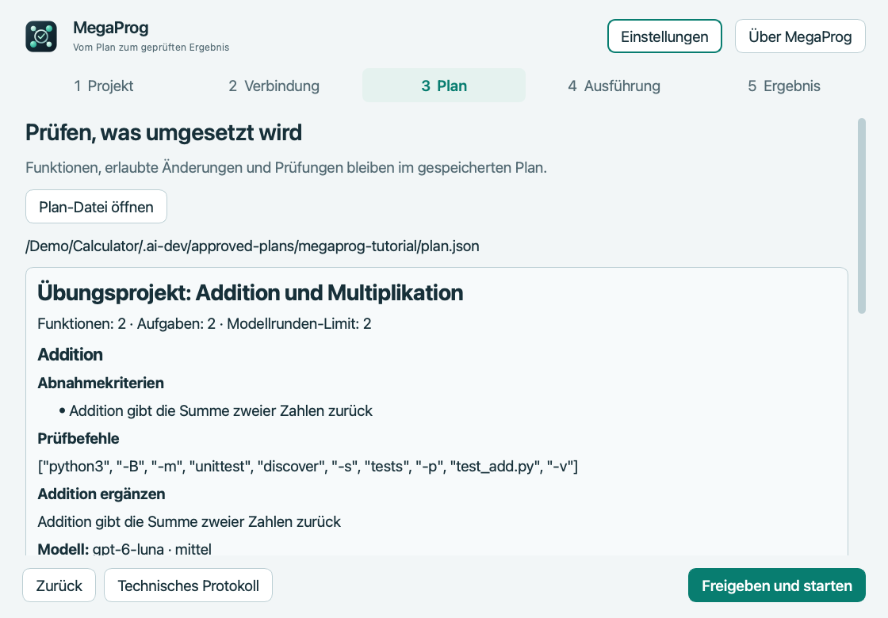

macOS · Apple Silicon
MegaProg
Führt freigegebene Entwicklungsaufgaben über Codex aus und speichert Anforderungen, Prüfungen und Fortschritt.
Vorabversion · 4.5.1Vor dem StartCodex CLI separat installieren und mit einem ChatGPT-Konto mit Codex-Zugang anmelden; Git-Projekt nötig. Keine Apple-Notarisierung.


So funktioniert es
- Plan erstellen
- Aufgabe an Codex CLI übergeben
- Ergebnis prüfen
Erste Schritte
MegaProg.app entpacken, Verbindung prüfen und das Tutorial öffnen. Plan und Befehle vor der Ausführung prüfen.